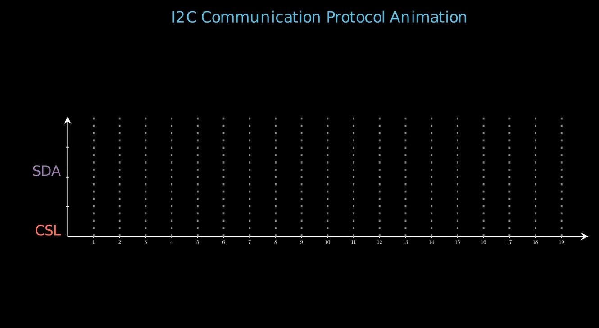
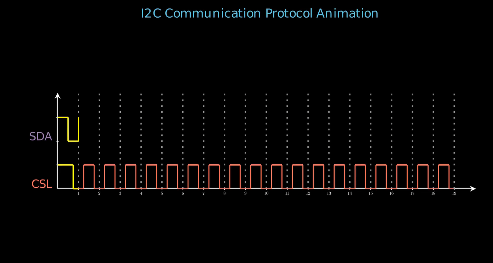
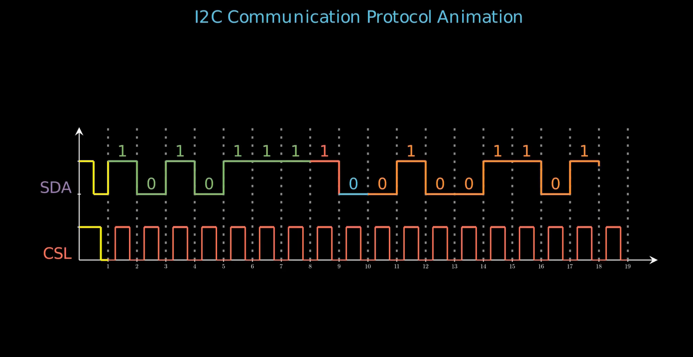
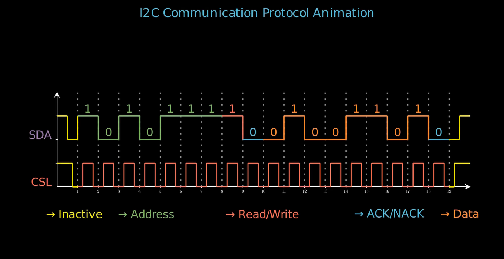

title: “I2C Communication Protocol Animation” format: revealjs editor: visual —
Introduction
The I2C (Inter-Integrated Circuit) protocol is a serial communication standard used to connect low-speed devices like sensors, EEPROMs, and microcontrollers. It uses two wires (SDA for data, SCL for clock) for synchronous, multi-master communication. In real life, I2C enables communication between chips in devices like smartphones (for touchscreens), IoT sensors, and embedded systems, offering simple wiring, addressing, and error-checking.
Key Features:
- Two-wire interface (saves pins)
- Supports multiple devices on one bus
- Used in sensors, displays, and memory chips
- Low-speed but reliable (up to 3.4 Mbps in modern versions)
- Common in consumer electronics & industrial systems
Code Block
from manim import *
class Main(Scene):
...- Imports the Manim library for mathematical animations.
- Defines a custom Scene class named
Mainthat will contain all methods and animation logic.
Code Block: start_transmission_condition
def start_transmission_condition(self, data_bits, axe, d_initial_y, c_initial_y):
start_x = 1
d_start_y = d_initial_y + 1
c_start_y = c_initial_y
initial_no_data_line_1 = Line(
axe.c2p(0, d_start_y),
axe.c2p(0.5, d_start_y),
color="YELLOW",
)
...
self.play(Create(initial_no_data_line_1), run_time=0.25)
self.play(Create(no_data_transition_line_1), run_time=0.1)
self.play(Create(initial_no_data_line_2), run_time=0.25)
if data_bits[0]:
self.play(Create(no_data_transition_line_2), run_time=0.1)
self.play(Create(initial_no_clock_line_1), run_time=0.25)
self.play(Create(initial_clock_transition_line), run_time=0.1)
self.play(Create(initial_no_clock_line_2), run_time=0.25)- Draws lines on the axes to represent the initial inactive (no data and no clock) conditions.
- Uses yellow lines to show transitions and the state of the data (SDA) and clock (SCL) lines at the start.
- Animates these lines sequentially to visualize the start of data transmission in I2C.

Code Block: generate_clock_signal
def generate_clock_signal(self, length, axe, color, initial_y):
start_x = 1
start_y = initial_y
for i in range(start_x, length + 1):
...
self.play(Create(low_state_start), run_time=0.2)
self.play(Create(rising_edge), run_time=0.2)
self.play(Create(high_state), run_time=0.2)
self.play(Create(falling_edge), run_time=0.2)
self.play(Create(low_state_end), run_time=0.2)
start_x = start_x + 1- Generates the clock (SCL) waveform by drawing high and low states with rising and falling edges.
- Animates each segment of the clock period to visually represent the timing signal in I2C.
- Advances the x-position for each cycle.

Code Block: stop_transmission_condition
def stop_transmission_condition(self, data_bits, axe, d_initial_y, c_initial_y):
d_start_y = d_initial_y + 1
c_start_y = c_initial_y
...
self.play(Create(end_no_clock_line_1), run_time=0.25)
self.play(Create(end_clock_transition_line), run_time=0.2)
self.play(Create(end_no_clock_line_2), run_time=0.25)
if data_bits[len(data_bits) - 1]:
self.play(Create(end_no_data_transition_line_1), run_time=0.1)
self.play(Create(end_no_data_line_1), run_time=0.1)
self.play(Create(end_no_data_transition_line_2), run_time=0.1)
self.play(Create(end_no_data_line_2), run_time=0.1)- Draws and animates the lines to represent the end of data and clock transmission.
- Handles transitions to inactive state at the end of the communication.
- Visually indicates the stop condition in I2C protocol.
Code Block: plot_step_function
def plot_step_function(self, data_bits, axe, initial_y):
start_x = 1
start_y = initial_y + 1
for i, bit in enumerate(data_bits):
custom_color = (
"GREEN" if i in [0, 1, 2, 3, 4, 5, 6]
else ("RED" if i == 7 else ("BLUE" if i == 8 or i == 17 else "ORANGE"))
)
end_x = i + 2
line = Line(
axe.c2p(start_x, start_y),
axe.c2p(end_x, start_y),
color=custom_color,
)
curr_bit_text = (
Text(
f"{ bit }",
font="Cascadia Code",
color=custom_color,
)
.scale(0.5)
.next_to(line, UP, buff=0.1)
)
self.play(Create(line), run_time=0.2)
self.play(Write(curr_bit_text), run_time=0.1)
if i < len(data_bits) - 1 and data_bits[i + 1] != bit:
transition_line = Line(
axe.c2p(end_x, start_y),
axe.c2p(end_x, initial_y + data_bits[i + 1]),
color=custom_color,
)
self.play(Create(transition_line), run_time=0.25)
start_x = end_x
start_y = (
initial_y + data_bits[i + 1] if i < len(data_bits) - 1 else start_y
)
if i in [6, 7, 8, 16, 17]:
self.wait(0.5)- Plots the data bits (SDA line) as a step function.
- Uses different colors to distinguish address, read/write, data, and ACK/NACK sections.
- Animates transitions between bits and displays the bit value above the line.
- Waits at certain indices to highlight important parts.

Code Block: create_dotted_lines
def create_dotted_lines(self, axe, length):
for i in range(1, length + 1):
dotted_line = DashedLine(
axe.c2p(i, 0),
axe.c2p(i, 4),
dash_length=0.05,
dashed_ratio=0.3,
color="GREY",
)
self.play(Create(dotted_line), run_time=0.15)- Draws vertical dashed (dotted) lines at each bit interval for better visualization.
- Helps the viewer to distinguish between each bit period on the timing diagram.
Code Block: construct
def construct(self):
data_bits = [1, 0, 1, 0, 1, 1, 1, 1, 0, 0, 1, 0, 0, 1, 1, 0, 1, 0]
axe = (
Axes(
x_range=[0, 20, 1],
y_range=[0, 4, 1],
x_length=35,
y_length=8,
axis_config={"tip_shape": StealthTip, "tip_length": 0.1},
x_axis_config={
"include_numbers": True,
},
)
.scale(0.35)
.shift(RIGHT * 0.25)
)
borders = SurroundingRectangle(
axe,
color="BLACK",
fill_color="PURPLE",
fill_opacity=0,
buff=0.25,
)
title = (
Text(
"I2C Communication Protocol Animation",font="Cascadia Code",font_size=26,color=BLUE).to_edge(UP*0.5)
)
sda_line_label = (
Text("SDA", font="Cascadia Code", color="PURPLE")
.scale(0.5)
.next_to(axe, LEFT, buff=0.1)
.align_to(axe, DOWN)
.shift(UP * 1.6)
)
scl_line_label = (
Text("CSL", font="Cascadia Code", color="RED")
.scale(0.5)
.next_to(axe, LEFT, buff=0.1)
.align_to(axe, DOWN)
.shift(UP * 0.2)
)
...
self.play(Write(title))
self.wait(0.25)
self.add(axe)
self.wait(0.25)
self.create_dotted_lines(axe, 19)
self.wait(0.5)
self.play(Write(sda_line_label), run_time=0.2)
self.wait(0.25)
self.play(Write(scl_line_label), run_time=0.2)
self.wait(0.25)
self.start_transmission_condition(data_bits, axe, d_initial_y=2, c_initial_y=1)
self.wait(0.25)
self.generate_clock_signal(18, axe, "RED", initial_y=1)
self.wait(0.25)
self.plot_step_function(data_bits, axe, initial_y=2)
self.wait(0.25)
self.stop_transmission_condition(data_bits, axe, d_initial_y=2, c_initial_y=1)
self.wait(0.25)
self.play(Write(inactive_line_label))
self.wait(0.25)
self.play(Write(address_line_label))
self.wait(0.25)
self.play(Write(RW_line_label))
self.wait(0.25)
self.play(Write(ACK_line_label))
self.wait(0.25)
self.play(Write(data_line_label))
self.wait(2)
self.play(
*[FadeOut(mob) for mob in self.mobjects],
run_time=5,
rate_func=rate_functions.smooth
)- Sets up the data bits and creates the axes for the animation.
- Adds labels for SDA (data), SCL (clock), and other protocol signals.
- Calls the previously defined methods to animate the start condition, clock signal, data bits, and stop condition.
- Adds labels for different parts of the waveform (Inactive, Address, Read/Write, Data, ACK/NACK).
- Smoothly fades out all elements at the end for a clean finish.

Summary
- Imports and class setup: Uses Manim library; defines a
Scenefor the animation. - start_transmission_condition: Animates the initial state and start condition of I2C protocol.
- generate_clock_signal: Draws/animates the clock waveform for timing.
- stop_transmission_condition: Animates the end (stop) condition for transmission.
- plot_step_function: Visualizes each data bit on the SDA line, including bit transitions and color-coded segments.
- create_dotted_lines: Adds vertical dashed lines to show bit boundaries.
- construct: Orchestrates overall scene construction, axis setup, signal animation, labeling, and cleanup.